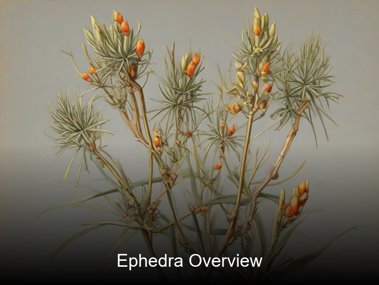
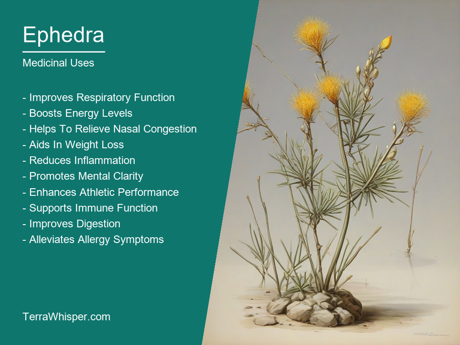
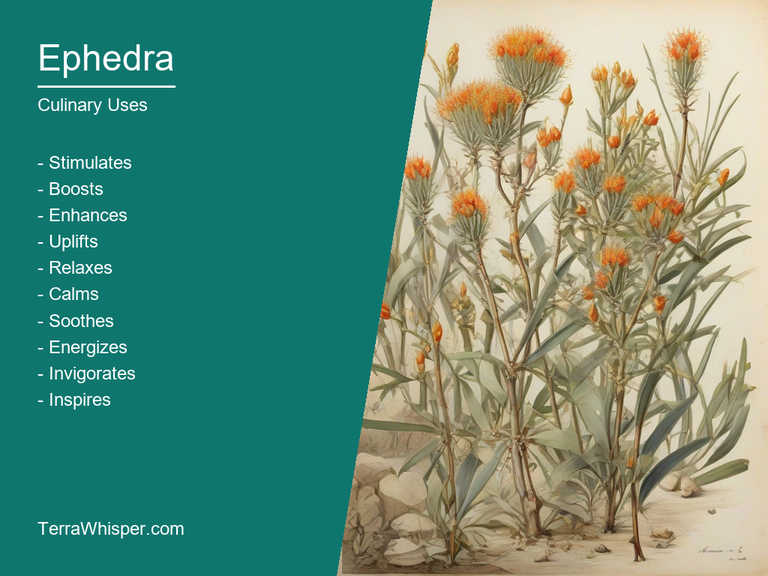
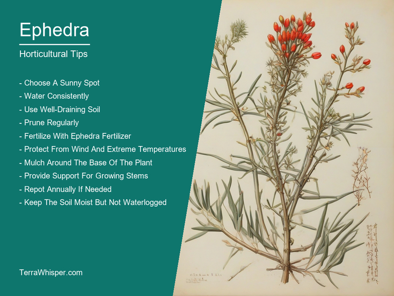
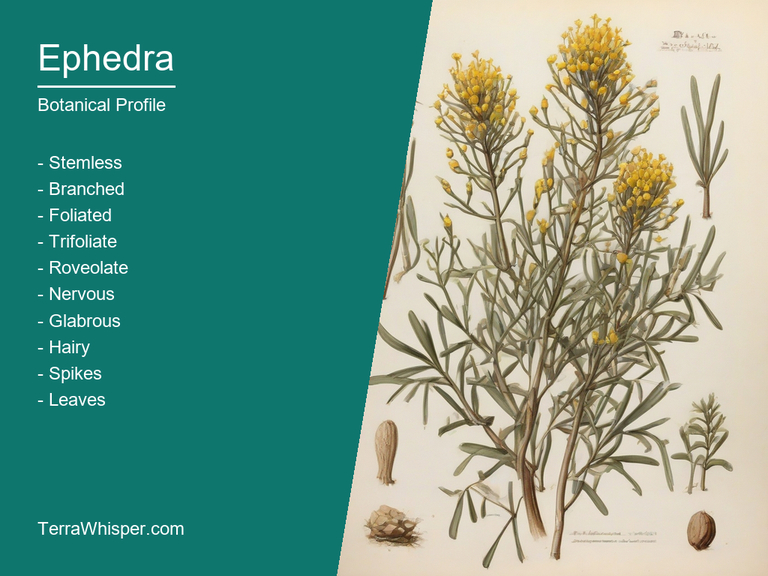
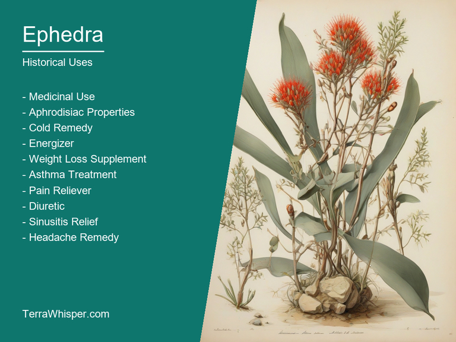

Ephedra, scientifically known as Ephedra sinica, is an amazing medicinal and culinary plant that has been used for centuries to treat various ailments. The medicinal properties of this plant have been well-documented in Chinese, Egyptian, Greek, and Roman medical texts. It is also used in cooking, adding flavor to dishes like soups and stews due to its distinct aroma.
Known for its horticultural and ornamental qualities, Ephedra sinica is a versatile plant that can be grown both indoors and outdoors, in various climates. Its attractive appearance makes it an excellent addition to gardens, where it thrives in well-drained soils with occasional watering. The plants form interesting clusters of stiff stems that give them a unique look, which can complement other ornamental shrubs or plants. Moreover, they are drought resistant, adding durability to your landscaping projects.
Ephedra sinica is a fascinating plant with botanical and historical aspects as rich and complex as its uses in modern times. The plant belongs to the Ephedraceae family, containing various species and varieties worldwide, each with unique properties and characteristics. Historically, the Ancient Egyptians used it for medicinal purposes, while the Chinese appreciated its culinary uses.
The botanical composition of this remarkable plant includes tiny, needle-like leaves arranged in spirals on greenish-yellow stems. These distinctive features distinguish it from other plants within the Ephedraceae family. From a historical perspective, Ephedra sinica has been used for thousands of years as a medicinal aid by ancient civilizations across different continents. Today, the plant continues to have importance in modern medicine, particularly for treating respiratory issues and boosting energy levels through the use of its alkaloid compound ephedrine, found naturally within its tissues.
In this article, you will discover what are the medicinal and culinary uses of ephedra. Then, you'll learn how to cultivate it, what is its botanical profile, and how it was used historically.
Ephedra (Ephedra sinica) has many health benefits, such as being an effective aid in weight loss and treating respiratory problems like asthma. It also helps to boost mental concentration by acting on our central nervous system. Additionally, it can be useful in relieving nasal congestion during the flu or cold season. Ephedra sinica has also shown positive results in managing diabetes symptoms, reducing blood pressure, and alleviating menstrual cramps associated with dysmenorrhea.
The following illustration lists the most important uses of ephedra in medicine.

Ephedra contains several medicinal constituents that impart its healing properties. Some of these active ingredients include ephedrine and pseudoephedrine, which are both stimulants that can cause increased alertness, heightened blood pressure, and accelerated heart rate. The plant also has alkaloids such as vasicinone, quaternary ammonium salts like methylephedradienochloride, and various other organic compounds. These constituents work together to produce the various therapeutic effects experienced with Ephedra sinica use.
Ephedra's medicinal properties are often attributed to specific plant parts and how they are prepared. The stems or branches are the most commonly used components in herbal preparations, which can be either dried or crushed before use. Some popular forms of this medicinal plant include tea, extracts, tablets, and tinctures. These preparations are typically administered to relieve health conditions like respiratory problems, coughs, bronchitis, sinus infections, and nasal congestion, while providing a boost in mental energy and concentration.
As with any medication or supplement, Ephedra's use may come with potential side effects. Although not everyone experiences these negative outcomes, some people may encounter problems such as insomnia, nervousness, irritability, increased blood pressure, headaches, and heart palpitations. It is crucial to weigh the potential benefits against possible risks when considering whether or not to incorporate Ephedra into one's wellness routine.
To minimize any adverse effects and maximize its effectiveness, certain precautions should be taken when using Ephedra. Firstly, it is essential to consult a healthcare professional before including it as part of your health regimen, especially if you have pre-existing medical conditions or are taking prescription medications that may interact with the plant's constituents. It is also advisable to follow recommended dosage guidelines and avoid excessive use for prolonged periods, as this could potentially lead to adverse reactions and toxicity. By carefully monitoring oneself when consuming Ephedra, one can safely experience its various benefits without compromising their health in the process.
Ephedra, known by its botanical name as Ephedra sinica, is a plant that has been used for centuries in various culinary applications across different cultures. It is primarily utilized due to the presence of its medicinal properties and health benefits. However, it also finds its way into food preparations, bringing an earthy, herbaceous flavor profile that enhances dishes.
The following illustration lists the most common uses of ephedra for culinary purposes.

The edible parts of Ephedra vary based on the specific preparation method and cultural context. Most commonly, people use its tender leaves and shoots, which provide texture along with the distinctive taste. They are typically used in soups or salads to add a zestful touch. However, other parts like the stems can also be utilized for preparing beverages such as tea or tonics.
To make the most out of using Ephedra in culinary applications, start with fresh and high-quality leaves and shoots that are washed well to remove any dirt or debris. Properly dry them before use to prevent spoilage. When preparing soups, sauté the ingredients together for a more balanced flavor. In salads, mix the leaves and tender parts of Ephedra with other fresh vegetables to create a vibrant and healthy dish.
As delicious as Ephedra may be, it is important to note that it contains ephedrine, which can have adverse side effects on human health when consumed in large quantities. Additionally, its use may cause allergic reactions or sensitivity among individuals with certain medical conditions. Consume cautiously and always consult a professional for appropriate dosage advice when considering incorporating Ephedra into your culinary creations.
Ephedra (Ephedra sinica), commonly known as Mormon Tea, is a unique plant with various horticultural aspects. It thrives best under certain conditions to ensure its growth and health. Knowing these requirements will help cultivate a resilient and healthy plant.
The following illustration lists the most important tips to cutlitvate ephedra.

In terms of growth requirements for Ephedra, it prefers well-drained soil that is slightly alkaline or neutral with a pH range between 7.0 and 8.5. The plant can tolerate poor soils but performs best when richer in nutrients like nitrogen, phosphorus, potassium, calcium, magnesium, and sulfur.
For successful planting of Ephedra, it's crucial to select a suitable location with full sun exposure or partial shade. It can grow in various environments such as grasslands, rocky slopes, chaparral, or deserts but thrives best when planted in zones 3 through 10. The ideal planting depth should be equal to three times the width of the seedling's root ball. Plant spacing is also essential; Ephedra requires at least a 6-inch gap between plants for optimal growth.
Caring tips for Ephedra involve providing ample care and attention after planting. Watering is vital, but it should be done only when the soil dries out to prevent root rot. It's advisable to apply a balanced fertilizer twice per year during spring and midsummer to promote healthy growth. Additionally, regular pruning helps maintain a dense canopy while encouraging new growth.
Harvesting Ephedra is another significant aspect of its cultivation. The best time to collect the plant's branches or needles depends on its use, be it for medicinal purposes or other applications. If using the plant for tea or as a spice, collecting branches in late fall and winter when they are dry and woody results in a more concentrated flavor. For medicinal purposes, harvesting the young shoot tips from late spring to early summer is ideal due to higher concentrations of bioactive compounds, while the rest of the plant parts provide richness during the remainder of the growing season.
Ephedra, with botanical name Ephedra sinica, belongs to the domain Eukaryota, which features life-forms that have a nucleus and membrane-bound organelles. It is part of kingdom Plantae, encompassing all plants. The phylum it belongs to is Pinophyta, a group of gymnospermous plants with seeds. Ephedra sinica falls under the class Spermatophyta, which comprises seed plants that reproduce sexually through flowers. As for order, it is placed in the Ephedrales, an order of small evergreen shrubs or trees. The family is Ephedraceae, a group of about 60 species known as jointfir or ephedra. In the genus Ephedra, there are different forms which share some similarities but also have distinct characteristics. Among them, Ephedra sinica has smaller branches and less densely packed foliage compared to other Ephedra variants.
The following illustration display the botanical profile of ephedra.

There are several common names for Ephedra sinica, including jointfir, ephedra, and desert grass tree.
Ephedra's appearance shows a unique morphology with small leaves arranged in opposite pairs along the branches. The leaves are scale-like, non-vascularized, and have a single vein running through them. The woody structure is comprised of jointed branches, forming dense shrubs or small trees up to 3 meters tall. Ephedra sinica has an interesting adaptation – the plants produce salt glands that secrete excess salt into the atmosphere.
In terms of geographic distribution and natural habitats, Ephedra sinica is native to Asia. It thrives primarily in arid and semi-arid regions, such as deserts, mountainous terrains, and dry steppes. These plants can be found growing on a wide variety of soils but are particularly adapted to sandy, stony, or rocky soils with minimal nutrient content.
The life cycle of Ephedra sinica is characterized by its reproduction through both sexual (producing seeds) and asexual methods such as vegetative propagation through clonal growth from stem fragments. These plants have the ability to survive long periods without water, making them well adapted for their arid habitat conditions.
Ephedra sinica, commonly known as Ma Huang or Ephedra, is a shrub belonging to the botanical family Ephedraceae. This plant has been used for medicinal purposes since ancient times and its history stretches back thousands of years. It is native to China, where it was first discovered and utilized by the locals as herbal medicine.
The following illustration lists the most well known historical uses of ephedra.

Traditional medicine was greatly dependent on natural remedies such as Ephedra. Its leaves, roots, and stems were used to prepare tea with therapeutic properties for treating a wide range of illnesses including asthma, respiratory problems, bronchitis, and even obesity. The plant's stimulant effects also made it popular among those seeking an energy boost, mental alertness or a remedy for fatigue.
Ephedra has played an important role in the realm of divination as well. In ancient Chinese society, the plant was believed to possess magical properties that could foretell future events and provide guidance for individuals. It became customary for those seeking wisdom and insight into their lives to consult with a diviner who used various techniques, such as burning Ephedra leaves to produce smoke or placing them on burning coal. This would then be interpreted according to the patterns formed by the smoke or ash, which were thought to reveal hidden truths and answers to questions related to health, relationships, career, and other areas of life.
Finally, there are several legends surrounding Ephedra that have endured through generations. One notable tale from China is about a man named Huangdi who used Ephedra as part of his journey to become the first emperor. According to this legend, he consumed the plant's leaves and roots for its stimulant effects, enabling him to stay focused on his quest while battling various challenges along the way. This story became entwined with cultural traditions in which Ma Huang was revered and respected as a symbol of power, endurance, and personal triumph.